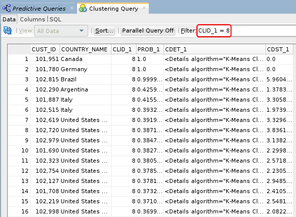
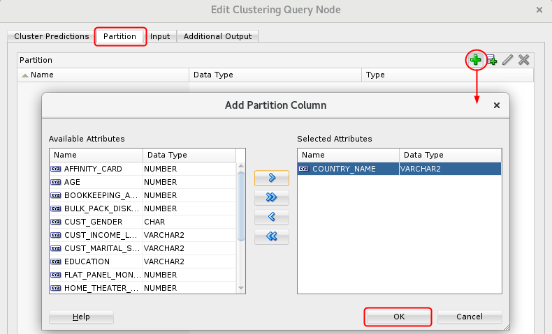
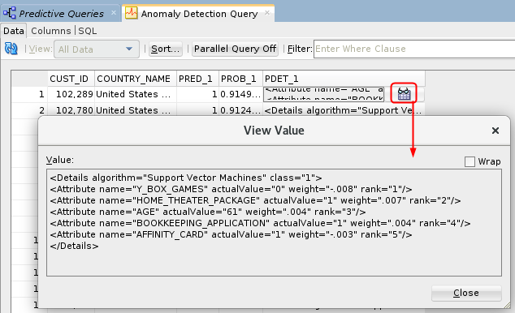
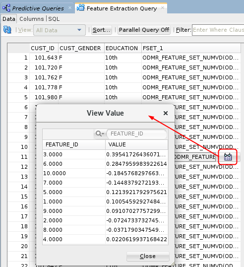

Execute
Clustering, Anomaly Detection and Feature Extraction Queries
Execute
Clustering, Anomaly Detection and Feature Extraction Queries Before You Begin
Before You Begin
This 15-minute tutorial shows you how to create and execute three additional predictive queries using Oracle Data Miner, including clustering, anomaly detection and feature extraction queries.
Background
Data mining can be used to solve many kinds of predictive analysis problems, including the following:
- Predicting outcomes or values (Classification or Regression models)
- Finding natural segments or clusters in a population (Clustering models)
- Finding fraudulent or rare events (Anomaly Detection models)
- Creating new attributes (features) for a target variable by combining original attributes (Feature Extraction models)
Oracle Data Miner provides predictive query capabilities for these specific model types. The predictive query options enable dynamic scoring of these model by generating a transient model that is not persisted.
What Do You Need?
- Oracle Database 19c Enterprise Edition
- Oracle SQL Developer version 19.x
- Oracle Data Miner User Account
- The Predictive Queries Workflow
 Create
and Execute a Clustering Query
Create
and Execute a Clustering Query
Clustering models define segments, or “clusters,” of a population and then decide the likely cluster membership of each new case (although it is possible for an item to be in more than one cluster).
These models use descriptive data mining techniques, but they can be applied to classify cases according to their cluster assignments. In this section, you define a Clustering Query node to predict homogeneous clusters of customers partitioned on their Country of residence level. Then, you run the node and view the results.
- Add a Clustering Query node to the Predictive Queries
workflow:
- Open the Predictive Queries category in the Components tab.
- Drag and drop the Clustering Query node from the Components tab to the Workflow pane.
- Connect the data source node to the Clustering Query node.
- Double-click the Clustering Query node to
open the Edit Clustering Query Node window. Then, perform the
following on the Predictions tab:
- Select CUST_ID as the Case ID attribute.
- Accept the default value of 10 for number of clusters to compute.
- Select the COUNTRY_NAME attribute as the Partition column and click OK.
- Click OK to close the Edit Clustering Query Node window.
- Right-click the Clustering Query node and select View Data from the menu.
- Sort and filter the output as follows:
- Click the Sort button, sort by Probability in Descending order, and then click OK.
- Apply the following Where clause in the Filter box: CLID_1 = 8

Description of the illustration clustering-query-result.png The filter selects only those records that are predicted to be in the eighth cluster.
- Close the Clustering Query tabbed window and Save the workflow by clicking the Save All icon in main toolbar.

 Create
and Execute an Anomaly Detection Query
Create
and Execute an Anomaly Detection Query
Anomaly Detection models use one-class classification. In this approach, the model trains on data that is homogeneous. Then, the model determines whether a new case is similar to the cases observed, or is somehow "abnormal" or "suspicious."
- Add an Anomaly Detection Query node to the workflow.
- Connect the data source node to the Anomaly Detection Query node.
- Double-click the Anomaly Detection Query node to open the Edit Anomaly Detection Node window. Then, on the Anomaly Predictions tab, select CUST_ID as the Case ID attribute.
- Select the COUNTRY_NAME attribute as the Partition column and click OK..
- Click OK to close the Edit Clustering Query Node window.
- Right-click the Clustering Query node and select View Data from the menu.
- Sort the query results using the following criteria:
- Prediction, in descending order.
- Probability, in descending order.
- Then click OK for view the sorted data.
- The Anomaly Prediction Query options enable viewing of
expanded prediction details. Perform the following:
- First, click the PDET_# column for the case you want to view.
- Then, scroll to the far right and click the sunglasses
icon to display the View Value window. This window contains,
in ranked order, information about the attributes that are
considered material for the anomaly prediction.

Description of the illustration anomaly-view-value.png In the example, we select case number 1, with the Customer ID of 101,289. You can examine the prediction details if any case in the same way.
- After you examine the prediction details, close the View Value window.
- Close the Anomaly Detection Query tabbed window and Save the workflow by clicking the Save All icon in main toolbar.
 Create
and Execute a Feature Extraction Query
Create
and Execute a Feature Extraction Query
Feature Extraction models create new attributes (features) by using combinations of the original attribute. For example, you can group the demographic attributes for a set of customers into general characteristics that describe the customer.
- Add a Feature Extraction Query node to the workflow.
- Connect the data source node to the Feature Extraction Query node.
- Double-click the Feature Extraction Query
node to open the Edit Feature Extraction Query Node window.
Then, perform the following on the Predictions tab:
- Select CUST_ID as the Case ID attribute.
- Accept the default value of 10 for number of clusters to compute.
- Select the Partition tab and perform the
following:
- Click the Add tool (green "+" icon).
- Select the CUST_GENDER and EDUCATION attributes as partition columns.
- Click OK.
- Click OK to close the Edit Feature Extraction Query Node window.
- Right-click the Feature Extraction Query node and select View
Data from the menu.

Description of the illustration feature-extraction-results.png Result: A tabbed window displays the data, including the output columns and Feature Set definition column. Just like with the Anomaly Detection Query, expanded prediction details are also provided for Feature Extraction Query.
- Close the Feature Extraction Query tabbed window and Save the workflow by clicking the Save All icon in main toolbar.